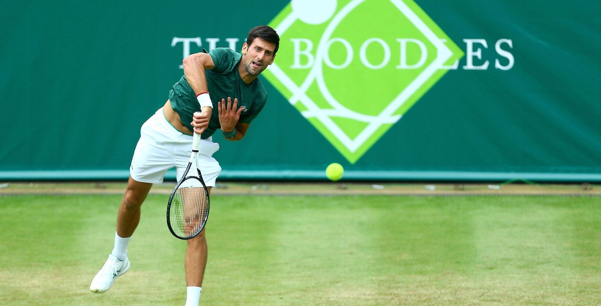
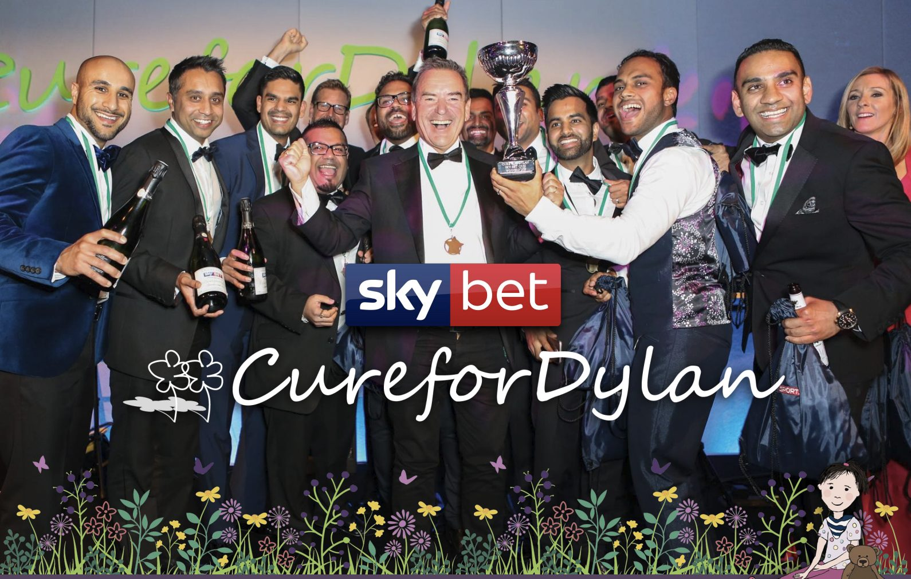
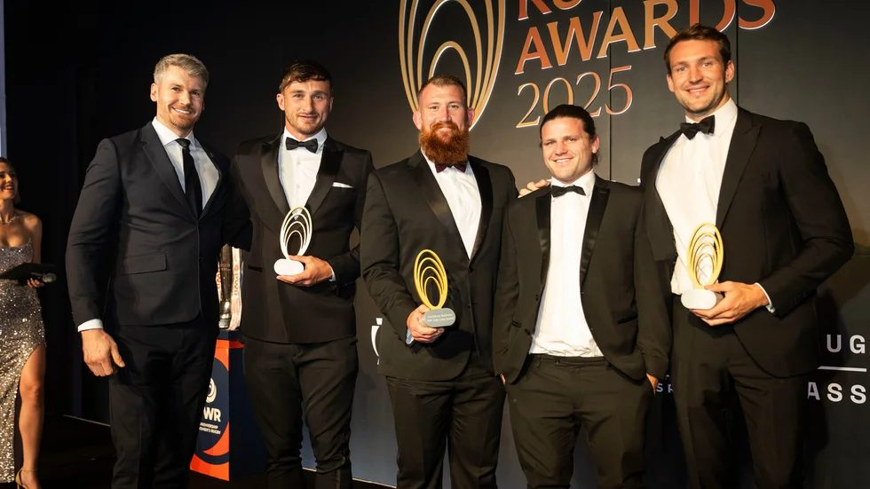

Marshall Harrison opens doors to exclusive, memorable hospitality experiences that also help support good causes.
For more than a decade, we have helped companies entertain clients, reward teams and bring guests together at some of the UK's most sought-after music, sport and cultural occasions: private boxes at the Royal Albert Hall, tables above the Thames, tournament days, charity golf events, awards nights and more.
In every case, the aim is the same: a great experience, handled personally, with the right setting for the people you want to host.
Through Marshall Harrison events and charity partnerships, we have helped raise over £1 million for causes that matter.
Teenage Cancer Trust Week at the Royal Albert Hall is a major part of that story, with companies supporting the charity through screen advertising and private box hospitality. Our annual charity lunch at the OXO Tower has supported causes including Guy's & Barts, with the IJF also an important part of our charity work.
Commercial hospitality and programme opportunities around the biggest night in British music, helping raise funds for the BRIT Trust and Nordoff Robbins.

An elegant summer tennis exhibition at Stoke Park, with world-class players, high-end hospitality and programme support for The Prince's Trust.

A black-tie dinner and interactive quiz with Sky Sports presenters and sporting personalities, raising funds for Cure For Dylan.

A celebration of club rugby legends, supporting Comic Relief and Restart Rugby.